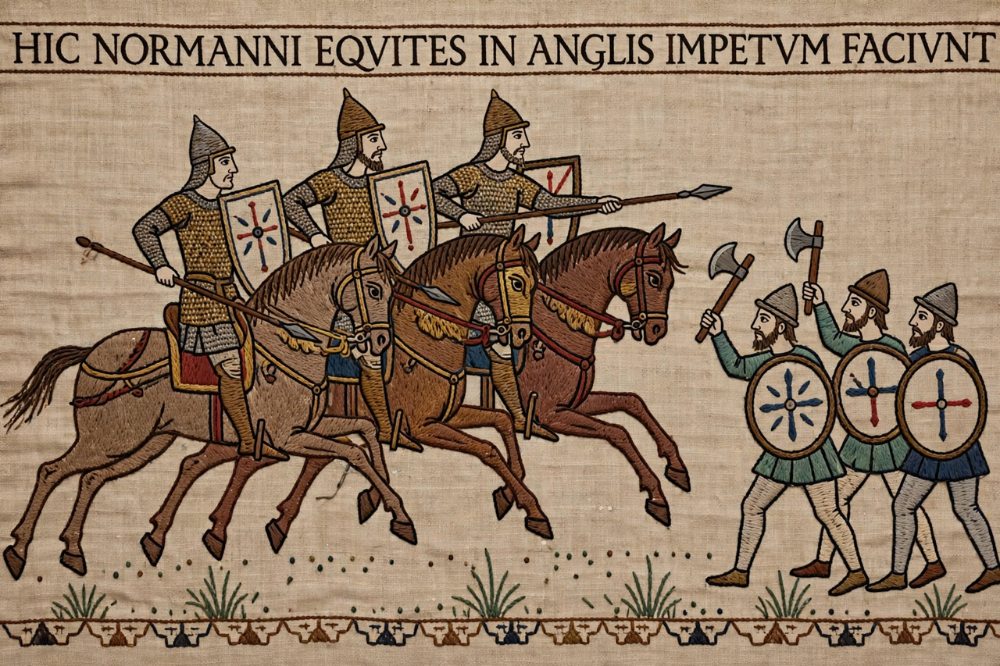

Battle of Hastings

A scene from the Bayeux Tapestry showing Norman cavalry charging the English shield-wall
The Battle of Hastings was fought on 14 October 1066 between the Norman-French army of William, Duke of Normandy, and the English army of King Harold Godwinson, on Senlac Hill near Hastings in Sussex. It was the decisive engagement of the Norman Conquest: after a day of fighting — exceptionally long for a medieval battle — Harold was killed, his housecarl shield-wall broken by Norman cavalry, archery and feigned retreats, and his army destroyed. William marched on London and was crowned king on Christmas Day 1066, beginning Norman rule of England.
The battle
Harold, having force-marched south after destroying the Norwegian invasion at Stamford Bridge (25 September), took a strong ridge position with perhaps 7,000–8,000 men behind a shield-wall. William's army — Breton, Norman and French contingents with archers, infantry and some 2,000–3,000 cavalry — attacked uphill all day. Rumours of William's death nearly broke his army (he raised his helmet to show himself alive); Norman feigned retreats — whether planned or improvised is debated — drew English troops downhill into slaughter. Harold died late in the day, by arrow and/or cavalry swords in the conflicting accounts, and English resistance collapsed at dusk.
Aftermath
William advanced through Dover and Canterbury, received London's submission, and was crowned in Westminster Abbey. Resistance continued for years — Exeter, York, the Harrying of the North, Hereward the Wake — but Hastings had decided the succession. The battle is uniquely documented by the Bayeux Tapestry, 70 metres of embroidered narrative commissioned within a generation, and by Norman and English chroniclers whose accounts still frame the national myth of 1066.